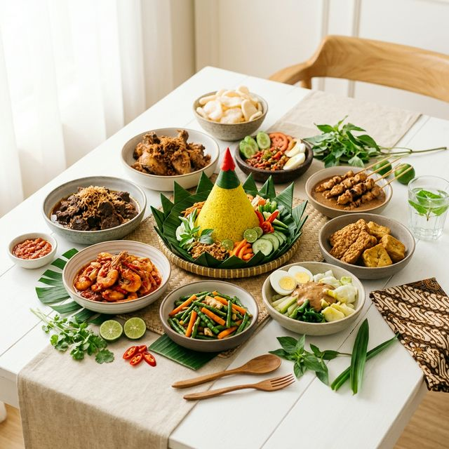
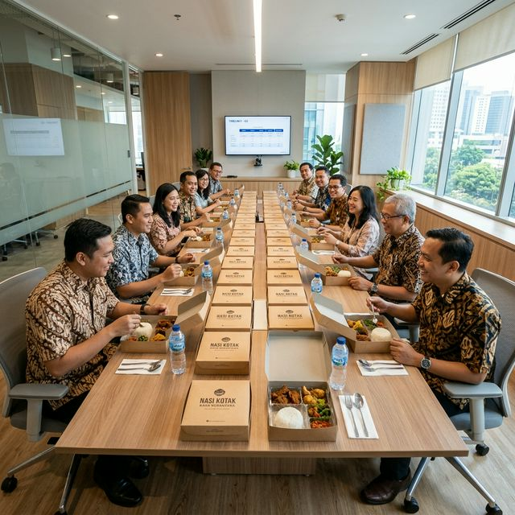
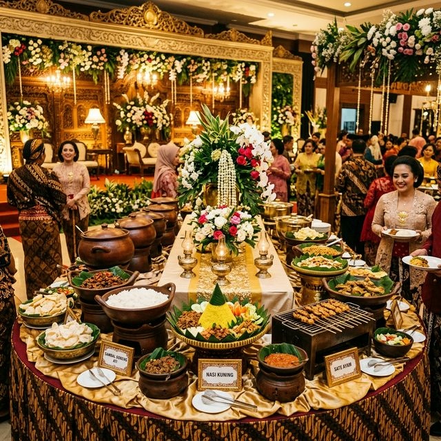
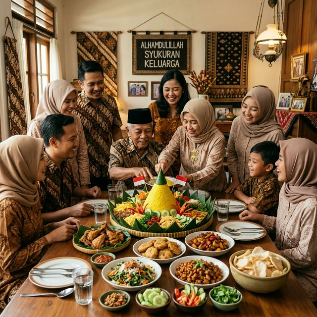
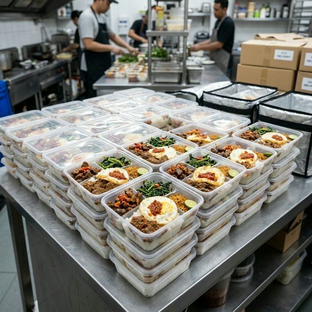

#RASANYANGANGENIN
Menghadirkan cita rasa otentik dengan bahan pilihan terbaik. Siap melayani nasi kotak, prasmanan, hingga tumpeng modern untuk momen spesial Anda.

Ribuan pelanggan sudah mempercayakan momen spesial mereka kepada Dapoer Niknik.
Bahan baku segar pilihan yang dibeli setiap hari, diolah menjadi ribuan porsi berkualitas.
Seluruh proses dari bahan baku hingga penyajian mengikuti standar kebersihan dan kehalalan.
Pengantaran dijamin on-time sampai ke lokasi acara Anda dengan armada khusus kami.
Dapoer Niknik lahir dari kecintaan kami terhadap kekayaan kuliner Indonesia. Kami spesialis dalam menyajikan hidangan autentik mulai dari Masakan Betawi, Sunda, Jawa, hingga Padang.
Berlokasi di Jakarta, kami siap melayani pesanan Nasi Box, Nasi Kuning, hingga Tumpeng Komplit untuk berbagai kebutuhan acara kantor, syukuran, atau harian Anda.
Pesan catering dari Dapoer Niknik semudah 4 langkah. Tanpa ribet!
Chat via WhatsApp atau isi form di website. Sampaikan jenis acara dan jumlah tamu.
Konsultasi dan pilih menu sesuai selera. Bisa custom sesuai budget dan tema acara Anda.
Konfirmasi pesanan dengan DP 50%. Pelunasan bisa dilakukan maksimal H-1 acara.
Pesanan datang tepat waktu di lokasi Anda. Tinggal duduk manis dan nikmati acaranya!
Dari rapat kantor hingga pesta pernikahan, kami siap menemani setiap momen penting Anda.



Tumpeng modern dan nasi kuning komplit untuk momen bersyukur.
Pesan untuk Syukuran
Kepuasan pelanggan adalah prioritas utama kami di Dapoer Niknik Jakarta.
"Nasi box premiumnya sangat memuaskan. Lauknya porsinya pas, rasanya Betawi banget, dan pengirimannya tepat waktu ke kantor."
"Tumpeng modernnya jadi bintang tamu di syukuran rumah. Penampilannya cantik, rasanya #RASANYANGANGENIN!"
"Sudah 3x pesan prasmanan buat acara kantor, selalu puas! Karyawan pada suka banget sama soto Betawi-nya."
"Mie kangkung bakso-nya juara! Kuahnya kental, porsinya mantap. Cocok buat makan siang di kantor."
"Nasi kuning komplit-nya enak banget, wangi rempahnya kerasa. Anak-anak di rumah juga suka semua!"
"Order empal gentong buat acara arisan, semua tetangga nanya pesan dimana. Pasti repeat order lagi!"
Informasi lengkap seputar layanan catering kami untuk wilayah Jakarta.
Untuk menjaga kualitas dan efisiensi, minimal pemesanan Nasi Box adalah mulai dari 15 box per satu kali pengiriman.
Saat ini kami melayani area Jakarta dan sekitarnya (Jabodetabek). Untuk area di luar itu, silakan konsultasi terlebih dahulu melalui WhatsApp.
Kami menerapkan sistem DP sebesar 50% untuk konfirmasi pesanan, dan pelunasan dilakukan maksimal H-1 sebelum waktu pengiriman.
Sangat bisa! Kami menerima penyesuaian menu baik untuk masakan Betawi, Jawa, Sunda, maupun Padang sesuai dengan selera dan kebutuhan budget Anda.
Kami menyarankan pemesanan minimal H-2 sebelum acara. Untuk acara besar seperti prasmanan atau tumpeng, sebaiknya pesan minimal H-7 agar persiapan lebih matang.
Punya pertanyaan atau ingin konsultasi menu masakan? Kami siap membantu mewujudkan hidangan impian Anda.